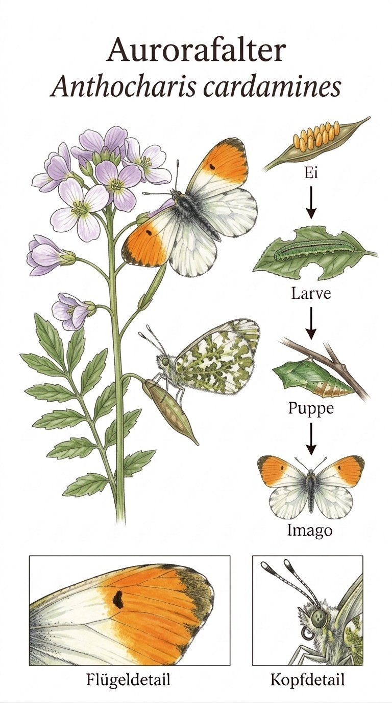

Insekten › Schmetterlinge › Tagfalter › Weißlinge

Anthocharis cardamines
Wenn im März die ersten Wiesenschaumkraut-Blüten aufgehen, ist er nicht weit: der Aurorafalter. Das Männchen trägt auf den Vorderflügeln einen leuchtend orangen Fleck – wie ein kleines Feuer über den noch blassen Frühlingswiesen. Das Weibchen ist hingegen fast reinweiß mit grünlicher Musterung auf der Unterseite. Diesen extremen Unterschied zwischen den Geschlechtern nennt man Sexualdimorphismus – beim Aurorafalter ist er unübersehbar.
Der Aurorafalter fliegt nur wenige Wochen im Jahr – von März bis Juni, dann ist er verschwunden. Die fertige Puppe überdauert den langen Sommer, Herbst und Winter und wartet geduldig auf den nächsten Frühling. Diese Strategie ist präzise auf seine Futterpflanzen abgestimmt: Wiesenschaumkraut und Knoblauchsrauke blühen ebenfalls nur im Frühling. Wer ihn treffen möchte, hat nur ein schmales Zeitfenster.
Die schlanke, graugrüne Raupe des Aurorafalters ist ein Meister der Tarnung. Sie sitzt aufrecht auf den Schoten des Wiesenschaumkrauts und sieht aus wie eine weitere Schote. Selbst aus nächster Nähe ist sie kaum zu erkennen. Später verpuppt sie sich an einem Stängel und bildet ebenfalls eine schotenartige Puppe – das Täuschungsmanöver setzt sich fort. Wer im Mai genau hinschaut, kann dieses kleine Wunder entdecken.
Texte und Bilder aus der Broschüre „Schmetterlinge im Ebsdorfergrund“ (Michael Baur), 1:1 übernommen · Fotos CC BY-NC, Illustrationen im Stil klassischer Lehrtafeln. Die Artseite ist der gemeinsame Endpunkt von Bestimmungsschlüssel und Stammbaum.